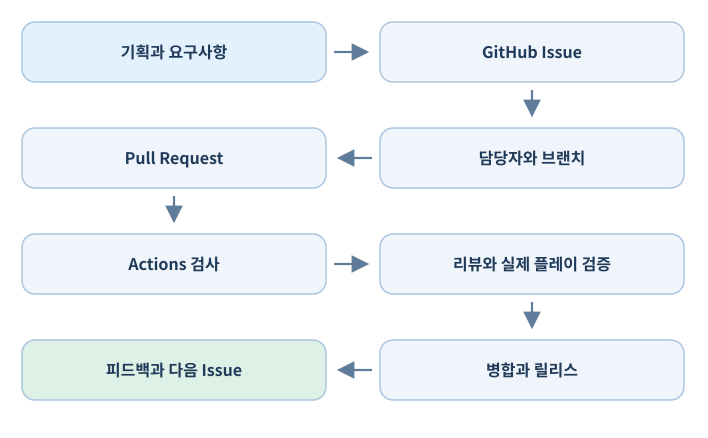

Unity 개발자를 위한 GitHub 실무 교과서#
GitHub를 파일 업로드 공간으로만 쓰지 않고, Unity 게임의 요구사항·설계·구현·협업·품질 검증·빌드·출시를 연결하는 도구로 활용하기 위한 실무 교재.
이 책은 Git, GitHub Desktop, GitHub의 웹 기능, Unity Editor를 명확히 구분하는 데서 시작한다. 개념의 뜻뿐 아니라 어디를 눌러 무엇을 작성하고, 어떤 명령을 실행하고, 무엇으로 성공을 판정하는지를 설명한다. 목표 독자는 GitHub가 낯설지만 Unity로 게임을 만들고 소규모 팀 개발에 적용하려는 개발자다.
책의 관점과 범위#
- 도구는 목적이 아니다. 목적은 게임 개발에서 요구사항을 잃지 않고, 변경을 추적하고, 팀원이 각자 해야 할 일을 알며, 결과물을 검증하는 소프트웨어공학 활동을 지속하는 것이다.
- Unity 프로젝트를 기준으로 한다.
.meta, GUID, 씬·프리팹, 대용량 에셋, 패키지, 빌드 라이선스 같은 게임 엔진 고유 문제를 별도로 다룬다. - 소규모 팀에 맞춘다. 팀장은 계획·일정·결정을 관리하고, 팀원은 자신에게 배정된 Issue를 중심으로 작업하며, 자동화는 반복적인 검증을 지원한다. 팀장에게 모든 결정을 몰아넣는 것은 지양한다.
- GitHub 기능과 별도 설치 도구를 구분한다. Projects·Issues·Actions는 GitHub에서 제공하는 실제 웹 기능이다. Git·GitHub Desktop·Git LFS·Unity는 설치하거나 로컬 환경에서 사용하는 도구이다.
- 완벽한 자동화는 전제하지 않는다. 코드가 빌드된다고 게임이 재미있다는 뜻은 아니다. 플레이 경험과 시청각 완성도는 사람의 평가가 필요하다.
용어 한눈에 보기#
| 이름 | 분류 | 하는 일 | 설치 여부 |
|---|---|---|---|
| Git | 버전 관리 프로그램 | 로컬 변경 이력과 브랜치 관리 | 필요 |
| GitHub | 웹 기반 협업 서비스 | 원격 Git 저장소·작업·자동화 제공 | 웹 이용 |
| GitHub Desktop | 데스크톱 GUI 프로그램 | Commit, Push, Pull 등 Git 작업 | 선택 설치 |
| Git LFS | Git 확장 프로그램 | 대용량 에셋 별도 저장 및 참조 | 필요할 때 설치 |
| GitHub Repository | GitHub 내 저장소 | 코드·문서와 변경 이력 보관 | 웹 기능 |
| GitHub Issues | GitHub 내 기능 | 작업·버그·요구사항 기록 | 웹 기능 |
| GitHub Projects | GitHub 내 기능 | 이슈·PR을 표·보드·로드맵으로 관리 | 웹 기능 |
| GitHub Actions | GitHub 내 기능 | 테스트·빌드·배포 자동화 정의·실행 | 웹 기능 |
| Unity Editor | 설치형 게임 개발 도구 | 게임과 에셋 제작 | 필요 |
예시 프로젝트#
책 전체에서 Aster Arena라는 가상의 3D 싱글플레이 액션 게임을 사용한다. 개발팀은 3명이며 플레이어 이동·회피·공격, 적 AI, 간단한 전투 장면을 포함한다. 예시 저장소 경로는 OWNER/aster-arena로 적는다. OWNER, URL, 토큰, Unity 에디터 경로 등은 독자가 자기 환경에 맞게 바꿔야 한다.
작업의 기본 흐름은 다음과 같다.

이 책에 포함된 예시와 실제 제품 기능 GitHub 설정·요금·권한 정책, Unity의 설치 위치·라이선스와 패키지 버전은 바뀔 수 있다. 예시 명령어는 읽고 실습할 수 있도록 작성했지만 사용자 환경에서 실시간 실행 검증한 것은 아니다. 확정적인 제품 정책이나 제한 수치는 해당 장의 공식 문서에서 최신 상태를 재확인한다. 이 책의 정보 검토 기준일은 2026년 10월 16일이다.
이 책의 구성#
- A. Git과 GitHub 기초: 로컬 이력·원격 저장소·보안·복구
- B. Unity 프로젝트 관리: 폴더·
.meta·Git LFS·병합·UVCS 비교 - C. 팀 협업: Branch·PR·리뷰·저장소 규칙
- D. 개발 작업 관리: Issues·Projects·템플릿·마일스톤·진행 현황
- E. 자동화: Actions·Unity 테스트·자동 빌드·릴리스
- F. 운영과 확장: 문서·보안·GitHub API·Discord·AI 규칙
본문은 각 장에서 개념 → 판단 기준 → 절차 → Unity 실습 → 흔한 실패 → 확인할 결과 순서로 정리했다. 필요한 장을 바로 찾아 읽어도 되며, 처음 접한다면 앞 장의 선행 개념을 이해하고 넘어가면 된다.
확장판 추가 학습 안내 (2026-10-24)#
기본 12장은 그대로 유지하면서 기존 설명 뒤에 실전 확장 절을 추가했다. 특히 GitHub 알림 관리, 논의와 공식 작업의 구분, 프로젝트 전체 상태 보고, 코드 검색과 의존성·보안 검사는 다음 장에서 별도로 설명한다.
- 07-A Notifications: 작업을 놓치지 않는 알림 체계
- 07-B Discussions와 프로젝트 상태 업데이트
- 11-A Code Search·Blame·Dependabot·보안 검사
복사 가능한 실습 파일은 프로젝트 최상위의 examples/ 폴더에 있다. 원고를 읽는 데 예제 설치가 필요하지 않으며, 실습할 때만 본인의 Unity 또는 GitHub 테스트 저장소에 복사한다.
기존 장을 익힌 다음에는 Unity × GitHub 종합 실습으로 작업의 연결 흐름을 검증할 수 있다.